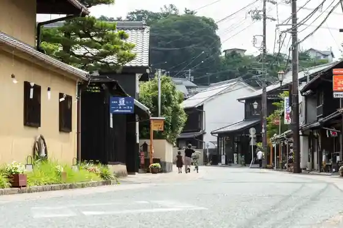
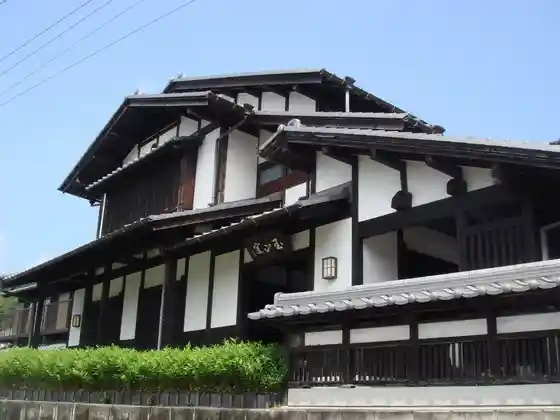
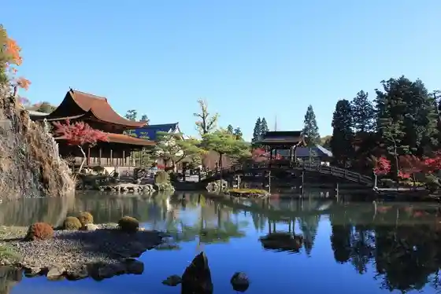
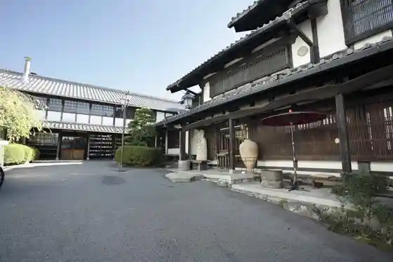

Kokei Yamaei Ho Tera no Autumn Leaves
Tajimi, Gifu · 0572-22-0351 · Official / source link
Hon Town Oribesutoriito
Tajimi, Gifu · 0572-21-2765 · Official / source link

Shi Yuki Kura Oribesutoriito
Tajimi, Gifu · 0572-23-2636 · Official / source link

Kokei Yamaei Ho Tera
Tajimi, Gifu · 0572-22-0351 · Official / source link

Kobe Kama
Tajimi, Gifu · 0572-22-3821 · Official / source link

Shingen Kai Tajimi Shudoin
Tajimi, Gifu · 0572-22-1583 · Official / source link
Shi Yuki Kura Sakazuki Art Museum
Tajimi, Gifu · 0572-24-5911 · Official / source link
Tourist Farm Tsuzuhara E no O (Ichigo & Buruberii Kari)
Tajimi, Gifu · 0572-23-7863 · Official / source link
Kokei Park
Tajimi, Gifu · 0572-22-1111 · Official / source link
Togei Taiken Boisuobuseramikkusu
Tajimi, Gifu · 0572-25-7267 · Official / source link
Kosuke Kama
Tajimi, Gifu · 0572-22-3723 · Official / source link
Kodomo Toki Museum
Tajimi, Gifu · 0572-27-8038 · Official / source link
Tenko Baths
Tajimi, Gifu · 0572-24-4126 · Official / source link
Kokei Kama
Tajimi, Gifu · 0572-22-0129 · Official / source link
Tajimi Mino Yaki Museum
Tajimi, Gifu · 0572-23-1191 · Official / source link
Toto Sozo Kan
Tajimi, Gifu · 0572-26-8509 · Official / source link
Mino Yaki Togei Experience
Tajimi, Gifu · Official / source link
Tosai no Kei
Tajimi, Gifu · 0572-22-1111 · Official / source link
Oyabu no Shidare Sakura
Tajimi, Gifu · Official / source link
Kokei Koen Lookout
Tajimi, Gifu · Official / source link
Tajimi Mozaikutairu Museum
Tajimi, Gifu · 0572-43-5101 · Official / source link
Toshin Mino Togei Art Museum
Tajimi, Gifu · 0572-22-1155 · Official / source link
SWANTILE cafe
Tajimi, Gifu · 0572-26-9516 · Official / source link
Kasahara Shiomi Forest
Tajimi, Gifu · 0572-43-5130 · Official / source link
Kokei Yosui Plaza
Tajimi, Gifu · 0572-23-2636 · Official / source link
ARTISTE VILLAGE
Tajimi, Gifu · Official / source link
Seramikku Park MINO
Tajimi, Gifu · 0572-28-3200 · Official / source link